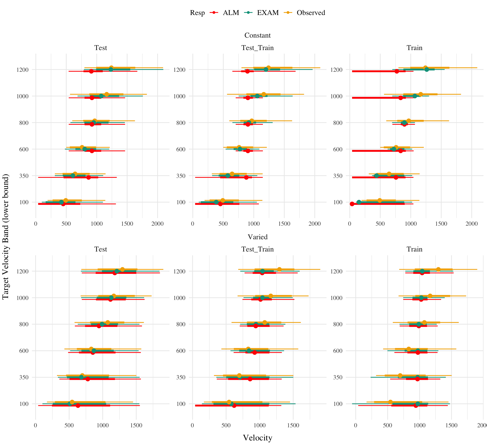

Weighted average of probabilities determines response to X
ALM Learning
Feedback
\(f_j(Z) = e^{-c(Z-Y_j)^2}\)
feedback signal Z computed as similarity between ideal response and observed response
magnitude of error
\(\Delta_{ji}=(f_{j}(Z)-o_{j}(X))a_{i}(X)\)
Delta rule to update weights.
Update Weights
\(w_{ji}^{new}=w_{ji}+\eta\Delta_{ji}\)
Updates scaled by learning rate parameter \(\eta\).
EXAM Extrapolation
Instance Retrieval
\(P[X_i|X] = \frac{a_i(X)}{\sum_{k=1}^M a_k(X)}\)
Novel test stimulus \(X\) activates input nodes \(X_i\)
Slope Computation
\(S =\)\(\frac{m(X_{1})-m(X_{2})}{X_{1}-X_{2}}\)
Slope value, \(S\) computed from nearest training instances
Response
\(E[Y|X_i] = m(X_i) + S \cdot [X - X_i]\)
ALM response \(m(X_i)\) adjusted by slope.
Modeling Approach
In project 1, I applied model-based techniques to quantify and control for the similarity between training and testing experience, which in turn enabled us to account for the difference between varied and constant training via an extended version of a similarity based generalization model. In project 2, I will go a step further, implementing a full process model capable of both 1) producing novel responses and 2) modeling behavior in both the learning and testing stages of the experiment. For this purpose, we will apply the associative learning model (ALM) and the EXAM model of function learning (DeLosh et al., 1997). ALM is a simple connectionist learning model which closely resembles Kruschke’s ALCOVE model (Kruschke, 1992), with modifications to allow for the generation of continuous responses.
ALM & Exam Description
ALM is a localist neural network model (Page, 2000), with each input node corresponding to a particular stimulus, and each output node corresponding to a particular response value. The units in the input layer activate as a function of their Gaussian similarity to the input stimulus. So, for example, an input stimulus of value 55 would induce maximal activation of the input unit tuned to 55. Depending on the value of the generalization parameter, the nearby units (e.g. 54 and 56; 53 and 57) may also activate to some degree. ALM is structured with input and output nodes that correspond to regions of the stimulus space, and response space, respectively. The units in the input layer activate as a function of their similarity to a presented stimulus. As was the case with the exemplar-based models, similarity in ALM is exponentially decaying function of distance. The input layer is fully connected to the output layer, and the activation for any particular output node is simply the weighted sum of the connection weights between that node and the input activations. The network then produces a response by taking the weighted average of the output units (recall that each output unit has a value corresponding to a particular response). During training, the network receives feedback which activates each output unit as a function of its distance from the ideal level of activation necessary to produce the correct response. The connection weights between input and output units are then updated via the standard delta learning rule, where the magnitude of weight changes are controlled by a learning rate parameter. The EXAM model is an extension of ALM, with the same learning rule and representational scheme for input and output units. The primary difference is that EXAM includes a linear extrapolation mechanism for generating novel responses during testing, a modification necessary to account for human extrapolation patterns in past research Brown & Lacroix (2017). Although this extrapolation rule departs from a strictly similarity-based generalization mechanism, EXAM is distinct from pure rule-based models in that it remains constrained by the weights learned during training.
See Table 1 for a full specification of the equations that define ALM and EXAM.
Model Fitting Strategy
To fit ALM and EXAM to our participant data, we employ a similar method to Mcdaniel et al. (2009), wherein we examine the performance of each model after being fit to various subsets of the data. Each model was fit to the data in with separate procedures: 1) fit to maximize predictions of the testing data, 2) fit to maximize predictions of both the training and testing data, 3) fit to maximize predictions of the just the training data. We refer to this fitting manipulations as “Fit Method” in the tables and figures below. It should be emphasized that for all three fit methods, the ALM and EXAM models behave identically - with weights updating only during the training phase.Models to were fit separately to the data of each individual participant. The free parameters for both models are the generalization (\(c\)) and learning rate (\(lr\)) parameters. Parameter estimation was performed using approximate bayesian computation (ABC), which we describe in detail below.
Approximate Bayesian Computation
To estimate parameters, we used approximate bayesian computation (ABC), enabling us to obtain an estimate of the posterior distribution of the generalization and learning rate parameters for each individual. ABC belongs to the class of simulation-based inference methods (Cranmer et al., 2020), which have begun being used for parameter estimation in cognitive modeling relatively recently (Kangasrääsiö et al., 2019; Turner et al., 2016; Turner & Van Zandt, 2012). Although they can be applied to any model from which data can be simulated, ABC methods are most useful for complex models that lack an explicit likelihood function (e.g. many neural network and evidence accumulation models).
The general ABC procedure is to 1) define a prior distribution over model parameters. 2) sample candidate parameter values, \(\theta^*\), from the prior. 3) Use \(\theta^*\) to generate a simulated dataset, \(Data_{sim}\). 4) Compute a measure of discrepancy between the simulated and observed datasets, \(discrepancy\)(\(Data_{sim}\), \(Data_{obs}\)). 5) Accept \(\theta^*\) if the discrepancy is less than the tolerance threshold, \(\epsilon\), otherwise reject \(\theta^*\). 6) Repeat until desired number of posterior samples are obtained.
Although simple in the abstract, implementations of ABC require researchers to make a number of non-trivial decisions as to i) the discrepancy function between observed and simulated data, ii) whether to compute the discrepancy between trial level data, or a summary statistic of the datasets, iii) the value of the minimum tolerance \(\epsilon\). For the present work, we follow the guidelines from published ABC tutorials (Farrell & Lewandowsky, 2018; Turner & Van Zandt, 2012). For the test stage, we summarized datasets with mean velocity of each band in the observed dataset as \(V_{obs}^{(k)}\) and in the simulated dataset as \(V_{sim}^{(k)}\), where \(k \in \{1, 2, 3, 4, 5, 6\}\) represents each of the six velocity bands. For computing the discrepancy between datasets in the training stage, we aggregated training trials into three equally sized blocks (separately for each velocity band in the case of the varied group). After obtaining the summary statistics of the simulated and observed datasets, the discrepancy was computed as the mean of the absolute difference between simulated and observed datasets (#eq-discrep-test and #eq-discrep-train).
The final component of our ABC implementation is the determination the appropriate value of \(\epsilon\). The setting of \(\epsilon\) exerts strong influence on the approximated posterior distribution. Smaller values of \(\epsilon\) increase the rejection rate, and improve the fidelity of the approximated posterior, while larger values result in an ABC sampler that reproduces the prior distribution. Because the individual participants in our dataset differed substantially in terms of the noisiness of their data, we employed an adaptive tolerance setting strategy to tailor \(\epsilon\) to each individual. The initial value of \(\epsilon\) was set to the overall standard deviation of each individuals velocity values. Thus, sampled parameter values that generated simulated data within a standard deviation of the observed data were accepted, while worse performing parameters were rejected. After every 300 samples the tolerance was allowed to increase only if the current acceptance rate of the algorithm was less than 1%. In such cases, the tolerance was shifted towards the average discrepancy of the 5 best samples obtained thus far. To ensure the acceptance rate did not become overly permissive, \(\epsilon\) was also allowed to decrease every time a sample was accepted into the posterior.
For each of the 156 participants from Experiment 1, the ABC algorithm was run until 200 samples of parameters were accepted into the posterior distribution. Obtaining this number of posterior samples required an average of 205,000 simulation runs per participant. Fitting each combination of participant, Model (EXAM & ALM), and fitting method (Test only, Train only, Test & Train) required a total of 192 million simulation runs. To facilitate these intensive computational demands, we used the Future Package in R (Bengtsson, 2021), allowing us to parallelize computations across a cluster of ten M1 iMacs, each with 8 cores.
Table 2: Mean model errors predicting testing data, aggregated over all participants and velocity bands. Note that Fit Method refers to how model parameters were optimized, while error values reflect mean absolute error for the 6 testing bands
Figure 1: Model residuals for each combination of training condition, fit method, and model. Residuals reflect the difference between observed and predicted values. Lower values indicate better model fit. Note that y axes are scaled differently between facets.
Code
post_dat_l|>#filter(Fit_Method=="Test_Train") |> ggplot(aes(x=val,y=as.factor(x),col=Resp))+stat_pointinterval(position=position_dodge(.2))+ggh4x::facet_nested_wrap(condit~Fit_Method, axes ="all",ncol=3,scale="free")+labs(y="Target Velocity Band (lower bound)", x="Velocity")

Figure 2: Full posterior predictive distributions vs. observed data from participants.
Bengtsson, H. (2021). A Unifying Framework for Parallel and Distributed Processing in R using Futures. The R Journal, 13(2), 208. https://doi.org/10.32614/RJ-2021-048
Brown, M. A., & Lacroix, G. (2017). Underestimation in linear function learning: Anchoring to zero or x-y similarity? Canadian Journal of Experimental Psychology/Revue Canadienne de Psychologie Expérimentale, 71(4), 274–282. https://doi.org/10.1037/cep0000129
Cranmer, K., Brehmer, J., & Louppe, G. (2020). The frontier of simulation-based inference. Proceedings of the National Academy of Sciences, 117(48), 30055–30062. https://doi.org/10.1073/pnas.1912789117
DeLosh, E. L., McDaniel, M. A., & Busemeyer, J. R. (1997). Extrapolation: The Sine Qua Non for Abstraction in Function Learning. Journal of Experimental Psychology: Learning, Memory, and Cognition, 23(4), 19. https://doi.org/10.1037/0278-7393.23.4.968
Farrell, S., & Lewandowsky, S. (2018). Computational Modeling of Cognition and Behavior: (1st ed.). Cambridge University Press. https://doi.org/10.1017/CBO9781316272503
Kangasrääsiö, A., Jokinen, J. P. P., Oulasvirta, A., Howes, A., & Kaski, S. (2019). Parameter Inference for Computational Cognitive Models with Approximate Bayesian Computation. Cognitive Science, 43(6), e12738. https://doi.org/10.1111/cogs.12738
Mcdaniel, M. A., Dimperio, E., Griego, J. A., & Busemeyer, J. R. (2009). Predicting transfer performance: A comparison of competing function learning models. Journal of Experimental Psychology. Learning, Memory, and Cognition, 35, 173–195. https://doi.org/10.1037/a0013982
Page, M. (2000). Connectionist modelling in psychology: A localist manifesto. Behavioral and Brain Sciences, 23(4), 443–467. https://doi.org/10.1017/S0140525X00003356
Turner, B. M., Sederberg, P. B., & McClelland, J. L. (2016). Bayesian analysis of simulation-based models. Journal of Mathematical Psychology, 72, 191–199. https://doi.org/10.1016/j.jmp.2014.10.001
Turner, B. M., & Van Zandt, T. (2012). A tutorial on approximate Bayesian computation. Journal of Mathematical Psychology, 56(2), 69–85. https://doi.org/10.1016/j.jmp.2012.02.005
Source Code
---title: HTW Modelauthor: Thomas Gormandate: "`r Sys.Date()`"code-fold: truecode-tools: trueexecute: warning: false eval: true---{{< pagebreak >}}::: column-page-inset-right| | **ALM Response Generation** | ||------------------|------------------------------|-------------------------|| Input Activation | $a_i(X) = \frac{e^{-c(X-X_i)^2}}{\sum_{k=1}^M e^{-c(X-X_k)^2}}$ | Input nodes activate as a function of Gaussian similarity to stimulus || Output Activation | $O_j(X) = \sum_{k=1}^M w_{ji} \cdot a_i(X)$ | Output unit $O_j$ activation is the weighted sum of input activations and association weights || Output Probability | $P[Y_j|X] = \frac{O_j(X)}{\sum_{k=1}^M O_k(X)}$ | The response, $Y_j$ probabilites computed via Luce's choice rule || Mean Output | $m(X) = \sum_{j=1}^L Y_j \cdot \frac{O_j(x)}{\sum_{k=1}^M O_k(X)}$ | Weighted average of probabilities determines response to X || | **ALM Learning** | || Feedback | $f_j(Z) = e^{-c(Z-Y_j)^2}$ | feedback signal Z computed as similarity between ideal response and observed response || magnitude of error | $\Delta_{ji}=(f_{j}(Z)-o_{j}(X))a_{i}(X)$ | Delta rule to update weights. || Update Weights | $w_{ji}^{new}=w_{ji}+\eta\Delta_{ji}$ | Updates scaled by learning rate parameter $\eta$. || | **EXAM Extrapolation** | || Instance Retrieval | $P[X_i|X] = \frac{a_i(X)}{\sum_{k=1}^M a_k(X)}$ | Novel test stimulus $X$ activates input nodes $X_i$ || Slope Computation | $S =$ $\frac{m(X_{1})-m(X_{2})}{X_{1}-X_{2}}$ | Slope value, $S$ computed from nearest training instances || Response | $E[Y|X_i] = m(X_i) + S \cdot [X - X_i]$ | ALM response $m(X_i)$ adjusted by slope. |: ALM & EXAM Equations {#tbl-alm-exam}:::{{< pagebreak >}}# Modeling ApproachIn project 1, I applied model-based techniques to quantify and control for the similarity between training and testing experience, which in turn enabled us to account for the difference between varied and constant training via an extended version of a similarity based generalization model. In project 2, I will go a step further, implementing a full process model capable of both 1) producing novel responses and 2) modeling behavior in both the learning and testing stages of the experiment. For this purpose, we will apply the associative learning model (ALM) and the EXAM model of function learning [@deloshExtrapolationSineQua1997]. ALM is a simple connectionist learning model which closely resembles Kruschke's ALCOVE model [@kruschkeALCOVEExemplarbasedConnectionist1992], with modifications to allow for the generation of continuous responses.## ALM & Exam DescriptionALM is a localist neural network model [@pageConnectionistModellingPsychology2000a], with each input node corresponding to a particular stimulus, and each output node corresponding to a particular response value. The units in the input layer activate as a function of their Gaussian similarity to the input stimulus. So, for example, an input stimulus of value 55 would induce maximal activation of the input unit tuned to 55. Depending on the value of the generalization parameter, the nearby units (e.g. 54 and 56; 53 and 57) may also activate to some degree. ALM is structured with input and output nodes that correspond to regions of the stimulus space, and response space, respectively. The units in the input layer activate as a function of their similarity to a presented stimulus. As was the case with the exemplar-based models, similarity in ALM is exponentially decaying function of distance. The input layer is fully connected to the output layer, and the activation for any particular output node is simply the weighted sum of the connection weights between that node and the input activations. The network then produces a response by taking the weighted average of the output units (recall that each output unit has a value corresponding to a particular response). During training, the network receives feedback which activates each output unit as a function of its distance from the ideal level of activation necessary to produce the correct response. The connection weights between input and output units are then updated via the standard delta learning rule, where the magnitude of weight changes are controlled by a learning rate parameter. The EXAM model is an extension of ALM, with the same learning rule and representational scheme for input and output units. The primary difference is that EXAM includes a linear extrapolation mechanism for generating novel responses during testing, a modification necessary to account for human extrapolation patterns in past research [@deloshExtrapolationSineQua1997 @mcdanielPredictingTransferPerformance2009 @brownUnderestimationLinearFunction2017]. Although this extrapolation rule departs from a strictly similarity-based generalization mechanism, EXAM is distinct from pure rule-based models in that it remains constrained by the weights learned during training. See @tbl-alm-exam for a full specification of the equations that define ALM and EXAM.## Model Fitting StrategyTo fit ALM and EXAM to our participant data, we employ a similar method to @mcdanielPredictingTransferPerformance2009, wherein we examine the performance of each model after being fit to various subsets of the data. Each model was fit to the data in with separate procedures: 1) fit to maximize predictions of the testing data, 2) fit to maximize predictions of both the training and testing data, 3) fit to maximize predictions of the just the training data. We refer to this fitting manipulations as "Fit Method" in the tables and figures below. It should be emphasized that for all three fit methods, the ALM and EXAM models behave identically - with weights updating only during the training phase.Models to were fit separately to the data of each individual participant. The free parameters for both models are the generalization ($c$) and learning rate ($lr$) parameters. Parameter estimation was performed using approximate bayesian computation (ABC), which we describe in detail below. ### Approximate Bayesian ComputationTo estimate parameters, we used approximate bayesian computation (ABC), enabling us to obtain an estimate of the posterior distribution of the generalization and learning rate parameters for each individual. ABC belongs to the class of simulation-based inference methods [@cranmerFrontierSimulationbasedInference2020], which have begun being used for parameter estimation in cognitive modeling relatively recently [@turnerTutorialApproximateBayesian2012; @turnerBayesianAnalysisSimulationbased2016; @kangasraasioParameterInferenceComputational2019]. Although they can be applied to any model from which data can be simulated, ABC methods are most useful for complex models that lack an explicit likelihood function (e.g. many neural network and evidence accumulation models). The general ABC procedure is to 1) define a prior distribution over model parameters.2) sample candidate parameter values, $\theta^*$, from the prior.3) Use $\theta^*$ to generate a simulated dataset, $Data_{sim}$.4) Compute a measure of discrepancy between the simulated and observed datasets, $discrepancy$($Data_{sim}$, $Data_{obs}$). 5) Accept $\theta^*$ if the discrepancy is less than the tolerance threshold, $\epsilon$, otherwise reject $\theta^*$.6) Repeat until desired number of posterior samples are obtained. Although simple in the abstract, implementations of ABC require researchers to make a number of non-trivial decisions as to i) the discrepancy function between observed and simulated data, ii) whether to compute the discrepancy between trial level data, or a summary statistic of the datasets, iii) the value of the minimum tolerance $\epsilon$. For the present work, we follow the guidelines from published ABC tutorials [@turnerTutorialApproximateBayesian2012; @farrellComputationalModelingCognition2018]. For the test stage, we summarized datasets with mean velocity of each band in the observed dataset as $V_{obs}^{(k)}$ and in the simulated dataset as $V_{sim}^{(k)}$, where $k \in \{1, 2, 3, 4, 5, 6\}$ represents each of the six velocity bands. For computing the discrepancy between datasets in the training stage, we aggregated training trials into three equally sized blocks (separately for each velocity band in the case of the varied group). After obtaining the summary statistics of the simulated and observed datasets, the discrepancy was computed as the mean of the absolute difference between simulated and observed datasets (#eq-discrep-test and #eq-discrep-train).$$discrepancy_{Test}(Data_{sim}, Data_{obs}) = \frac{1}{6} \sum_{k=1}^{6} |V_{obs}^{(k)} - V_{sim}^{(k)}|$$ {#eq-discrep-test}$$\begin{aligned} \\discrepancy_{Train,constant}(Data_{sim}, Data_{obs}) = \frac{1}{N_{blocks}} \sum_{j=1}^{N_{blocks}} |V_{obs,constant}^{(j)} - V_{sim,constant}^{(j)}| \\\\discrepancy_{Train,varied}(Data_{sim}, Data_{obs}) = \frac{1}{N_{blocks} \times 3} \sum_{j=1}^{N_{blocks}} \sum_{k=1}^{3} |V_{obs,varied}^{(j,k)} - V_{sim,varied}^{(j,k)}|\end{aligned}$$ {#eq-discrep-train}The final component of our ABC implementation is the determination the appropriate value of $\epsilon$. The setting of $\epsilon$ exerts strong influence on the approximated posterior distribution. Smaller values of $\epsilon$ increase the rejection rate, and improve the fidelity of the approximated posterior, while larger values result in an ABC sampler that reproduces the prior distribution. Because the individual participants in our dataset differed substantially in terms of the noisiness of their data, we employed an adaptive tolerance setting strategy to tailor $\epsilon$ to each individual. The initial value of $\epsilon$ was set to the overall standard deviation of each individuals velocity values. Thus, sampled parameter values that generated simulated data within a standard deviation of the observed data were accepted, while worse performing parameters were rejected. After every 300 samples the tolerance was allowed to increase only if the current acceptance rate of the algorithm was less than 1%. In such cases, the tolerance was shifted towards the average discrepancy of the 5 best samples obtained thus far. To ensure the acceptance rate did not become overly permissive, $\epsilon$ was also allowed to decrease every time a sample was accepted into the posterior. For each of the 156 participants from Experiment 1, the ABC algorithm was run until 200 samples of parameters were accepted into the posterior distribution. Obtaining this number of posterior samples required an average of 205,000 simulation runs per participant. Fitting each combination of participant, Model (EXAM & ALM), and fitting method (Test only, Train only, Test & Train) required a total of 192 million simulation runs. To facilitate these intensive computational demands, we used the Future Package in R [@bengtssonUnifyingFrameworkParallel2021], allowing us to parallelize computations across a cluster of ten M1 iMacs, each with 8 cores. ### Modelling Results```{r}pacman::p_load(dplyr,purrr,tidyr,ggplot2, data.table, here, patchwork, conflicted, stringr,future,furrr, knitr, reactable, flextable,ggstance, htmltools)conflict_prefer_all("dplyr", quiet =TRUE)options(scipen =999)walk(c("Display_Functions","fun_alm","fun_indv_fit","fun_model"), ~source(here::here(paste0("Functions/", .x, ".R"))))ds <-readRDS(here::here("data/e1_md_11-06-23.rds")) |>as.data.table()nbins <-3fd <-readRDS(here("data/e1_08-21-23.rds"))test <- fd |>filter(expMode2 =="Test") testAvg <- test %>%group_by(id, condit, vb, bandInt,bandType,tOrder) %>%summarise(nHits=sum(dist==0),vx=mean(vx),dist=mean(dist),sdist=mean(sdist),n=n(),Percent_Hit=nHits/n)trainAvg <- fd |>filter(expMode2 =="Train") |>group_by(id) |>mutate(tr=trial,x=vb,Block=case_when(expMode2=="Train"~cut(tr,breaks=seq(1,max(tr), length.out=nbins+1),include.lowest=TRUE,labels=FALSE), expMode2=="Test"~4)) |>group_by(id,condit,vb,x,Block) |>summarise(dist=mean(dist),y=mean(vx))input_layer <<- output_layer <<-c(100,350,600,800,1000,1200)ids2 <-c(1,66,36)ids3 <-c(20,71,101,4,76,192)idsBad <-c(76,192, 101)#file_name <- "n_iter_100_ntry_400_3247"file_name <-"n_iter_200_ntry_300_5354"ind_fits <-map(list.files(here(paste0('data/abc_reject/'),file_name),full.names=TRUE), readRDS)# ind_fits <- map(list.files(here('data/abc_reject/n_iter_2000_ntry_10_2918'),full.names=TRUE), readRDS)ind_fits_df <- ind_fits |>map(~list(dat=.x[[1]], Model = .x[["Model"]], Fit_Method=.x[["Fit_Method"]]))ind_fits_df <- ind_fits_df |>map(~rbindlist(.x$dat) |>mutate(Model = .x$Model, Fit_Method = .x$Fit_Method)) |>rbindlist() # avg_samples <- ind_fits_df |> group_by(id,condit,Model,Fit_Method) |> # summarise(inc=max(inc_count),iter_sum=sum(iter_count))# mean(avg_samples$iter_sum)# mean(avg_samples$iter_sum)# min(avg_samples$iter_sum)# max(avg_samples$iter_sum)# sum(avg_samples$iter_sum)# sum(avg_samples$iter_sum)# avg_samples |> group_by(Model,Fit_Method) |> summarise(mean(inc),mean(iter_sum))``````{r}generate_data <-function(Model, post_samples, data, num_samples =1, return_dat ="train_data, test_data") {# Filter data for the specific id without invalidating selfref sbj_data <-copy(data[id == post_samples$id[1]]) simulation_function <-ifelse(Model =="EXAM", full_sim_exam, full_sim_alm) target_data <-switch(return_dat,"test_data"=copy(sbj_data[expMode2 =="Test"]),"train_data"=copy(sbj_data[expMode2 =="Train"]),"train_data, test_data"=copy(sbj_data[expMode2 %in%c("Test", "Train")])) post_samples <- post_samples[order(mean_error)][1:num_samples, .(c, lr, mean_error, rank = .I)] simulated_data_list <-lapply(1:nrow(post_samples), function(i) { params <- post_samples[i] sim_data <-simulation_function(sbj_data, params$c, params$lr, input_layer = input_layer, output_layer = output_layer, return_dat = return_dat) sim_data_dt <-data.table(id = sbj_data$id[1], condit = sbj_data$condit[1], expMode2 = target_data$expMode2, Model = Model,tr=target_data$tr,y = target_data$y, x = target_data$x, c = params$c, lr = params$lr, mean_error = params$mean_error, rank = i,pred = sim_data)return(sim_data_dt) }) result_dt <-rbindlist(simulated_data_list)setcolorder(result_dt, c("id", "condit", "expMode2","tr", "c", "lr", "x", "y", "pred"))return(result_dt)}future::plan(multisession)nestSbjModelFit <- ind_fits_df %>%nest(.by=c(id,Model,Fit_Method))# organize test data predictionspost_dat <- nestSbjModelFit |>mutate(pp=furrr::future_pmap(list(id,Model,Fit_Method,data), ~{generate_data(..2, ..4|>mutate(id=..1), ds, num_samples =50, return_dat="test_data") })) |>select(Fit_Method,pp,-data) |>unnest(pp) |>filter(expMode2=="Test") |>as.data.table()post_dat_avg <- post_dat |>group_by(id, condit, Model, Fit_Method, x, c, lr, rank) |>summarise(y =mean(y), pred =mean(pred), error = y - pred) |>as.data.table()setorder(post_dat_avg, id, x, rank)post_dat_l <-melt(post_dat_avg, id.vars =c("id", "condit", "Model", "Fit_Method", "x", "c", "lr", "rank","error"),measure.vars =c("pred", "y"), variable.name ="Resp", value.name ="val")post_dat_l[, Resp :=fifelse(Resp =="y", "Observed",fifelse(Model =="ALM", "ALM", "EXAM"))]setorder(post_dat_l, id, Resp)#rm(post_dat_avg)# organize training data predictionspd_train <- nestSbjModelFit |>mutate(pp=furrr::future_pmap(list(id,Model,Fit_Method,data), ~{generate_data(..2, ..4|>mutate(id=..1), ds, num_samples =1, return_dat="train_data") })) |>select(Fit_Method,pp,-data) |>unnest(pp) |>as.data.table() |>filter(expMode2=="Train")plan(sequential)nbins <-3pd_train <- pd_train |>group_by(id,condit,Model,Fit_Method) |>mutate(Block=cut(tr,breaks=seq(1,max(tr), length.out=nbins+1),include.lowest=TRUE,labels=FALSE))setorder(pd_train, id, x,Block, rank)pd_train_l <-melt(pd_train, id.vars =c("id", "condit", "Model","Block", "Fit_Method", "x", "c", "lr", "rank"),measure.vars =c("pred", "y"), variable.name ="Resp", value.name ="val") |>as.data.table()pd_train_l[, Resp :=fifelse(Resp =="y", "Observed",fifelse(Model =="ALM", "ALM", "EXAM"))] setorder(pd_train_l, id,Block, Resp) pd_train_l <- pd_train_l |>mutate(dist =case_when( val >= x & val <= x +200~0, val < x ~abs(x - val), val > x +200~abs(val - (x +200)), TRUE~NA_real_ ))bestTestEXAM <- post_dat_l |>filter(Fit_Method=="Test", rank==1, Resp=="EXAM") |>group_by(id,condit,Model,Fit_Method) |>summarise(mae=mean(abs(error))) |>arrange(mae) |>ungroup() |>mutate(group_rank =row_number(),.by=c(condit))bestTestALM<- post_dat_l |>filter(Fit_Method=="Test", rank==1, Resp=="ALM") |>group_by(id,condit,Model,Fit_Method) |>summarise(mae=mean(abs(error))) |>arrange(mae) |>ungroup() |>mutate(group_rank =row_number(),.by=c(condit))bestTrainALM<- post_dat_l |>filter(Fit_Method=="Train", rank==1, Resp=="ALM") |>group_by(id,condit,Model,Fit_Method) |>summarise(mae=mean(abs(error))) |>arrange(mae) |>ungroup() |>mutate(group_rank =row_number(),.by=c(condit))bestTrainEXAM<- post_dat_l |>filter(Fit_Method=="Train", rank==1, Resp=="EXAM") |>group_by(id,condit,Model,Fit_Method) |>summarise(mae=mean(abs(error))) |>arrange(mae) |>ungroup() |>mutate(group_rank =row_number(),.by=c(condit))bestTtEXAM <- post_dat_l |>filter(Fit_Method=="Test_Train", rank==1, Resp=="EXAM") |>group_by(id,condit,Model,Fit_Method) |>summarise(mae=mean(abs(error))) |>arrange(mae) |>ungroup() |>mutate(group_rank =row_number(),.by=c(condit))``````{r}#| eval: true#| label: tbl-htw-modelError#| tbl-cap: "Mean model errors predicting testing data, aggregated over all participants and velocity bands. Note that Fit Method refers to how model parameters were optimized, while error values reflect mean absolute error for the 6 testing bands"post_tabs <-abc_tables(post_dat,post_dat_l)post_tabs$agg_pred_full |> flextable::tabulator(rows=c("Fit_Method","Model"), columns=c("condit"), `ME`=as_paragraph(mean_error)) |>as_flextable() ``````{r}#| label: fig-htw-residuals#| fig-cap: Model residuals for each combination of training condition, fit method, and model. Residuals reflect the difference between observed and predicted values. Lower values indicate better model fit. Note that y axes are scaled differently between facets.#| fig-subcap: ["Model Residuals - training data", "Model Residuals - testing data"]#| fig-height: 10#| fig-width: 11pd_train |>group_by(id,condit,Model,Fit_Method, Block) |>summarise(y =mean(y), pred =mean(pred), error = y - pred) |>ggplot(aes(x = Block, y =abs(error), fill=Model)) + stat_bar +facet_wrap(condit~Fit_Method, scales="free") +labs(title="Model Residuals - Training", y="Residual Error", x="Training Block") post_dat_avg |>#filter(Fit_Method=="Test_Train") |> ggplot(aes(x=abs(error),y=as.factor(x),col=Model)) +stat_pointinterval(position=position_dodge(.2)) + ggh4x::facet_nested_wrap(condit~Fit_Method, axes ="all",ncol=3,scale="free") +labs(y="Velocity Band", x="Residual Error")# post_dat_avg |> # #filter(Fit_Method=="Test_Train") |> # ggplot(aes(x=(error),y=as.factor(x),col=Model)) + # stat_pointinterval(position=position_dodge(.2)) + # ggh4x::facet_nested_wrap(condit~Fit_Method, axes = "all",ncol=3,scale="free") +# labs(y="Velocity Band", x="Residual Error")``````{r}#| label: fig-htw-obs-pred#| fig-cap: Full posterior predictive distributions vs. observed data from participants.#| fig-height: 10#| fig-width: 11post_dat_l |>#filter(Fit_Method=="Test_Train") |> ggplot(aes(x=val,y=as.factor(x),col=Resp)) +stat_pointinterval(position=position_dodge(.2)) + ggh4x::facet_nested_wrap(condit~Fit_Method, axes ="all",ncol=3,scale="free") +labs(y="Target Velocity Band (lower bound)", x="Velocity")``````{r}post_tabs$agg_x_full |>mutate(Fit_Method=="Test_Train") post_tabs$agg_x_full |> flextable::tabulator(rows=c("Fit_Method","Model","x"), columns=c("condit"), `X`=as_paragraph(mean_error)) |>as_flextable() post_tabs$agg_x_full |> flextable::tabulator(rows=c("Fit_Method","x"), columns=c("condit","Model"), `X`=as_paragraph(mean_error)) |>as_flextable() ``````{r}#| label: fig-htw-indv-pred2#| fig-cap: Individual predictions#| fig-height: 15#| fig-width: 12post_dat_l |>filter(Fit_Method=="Test_Train",x==100) |>group_by(x) |>mutate(id =reorder(id, val)) |>ggplot(aes(x=val,y=id,col=Resp)) +stat_pointinterval(position=position_dodge(.7)) + ggh4x::facet_grid2(condit~x, axes ="all",scales="free", independent ="y") +labs(y="Target Velocity Band (lower bound)", x="Velocity")post_dat_l |>filter(Fit_Method=="Test_Train", id %in% ids2) |>group_by(x) |>mutate(id =reorder(id, val)) |>ggplot(aes(x=val,y=as.factor(x),col=Resp)) +stat_pointinterval(position=position_dodge(.2)) + ggh4x::facet_nested_wrap(condit~id, axes ="all",scales="free_x") +labs(y="Target Velocity Band (lower bound)", x="Velocity")post_dat_l |>filter(Fit_Method=="Test_Train",x==100) |>group_by(x) |>mutate(id =reorder(id, val)) |>ggplot(aes(x=val,y=id,col=Resp)) +stat_pointinterval(position=position_dodge(.7)) + ggh4x::facet_nested_wrap(condit~x, axes ="all",scales="free") +labs(y="Target Velocity Band (lower bound)", x="Velocity")# post_dat_avg |> # mutate(id = reorder(id, abs(error))) |># #filter(Fit_Method=="Test_Train") |> # ggplot(aes(x=abs(error),y=id,col=Model)) + # stat_pointinterval(position=position_dodge(.2)) + # ggh4x::facet_nested_wrap(condit~Fit_Method, axes = "all",ncol=3,scale="free") +# labs(y="Velocity Band", x="Residual Error")# # # post_dat_avg |> # filter(Fit_Method=="Test_Train") |> # group_by(x) |># mutate(id = reorder(id, abs(error))) |># ggplot(aes(x=abs(error),y=id,col=Model)) + # stat_pointinterval(position=position_dodge(.2)) + # ggh4x::facet_nested_wrap(condit~x, axes = "all",ncol=6,scale="free") +# labs(y="Velocity Band", x="Residual Error")# # # post_dat_avg |> # filter(Fit_Method=="Test_Train") |> # group_by(x) |># mutate(id = reorder(id, (error))) |># ggplot(aes(x=(error),y=id,col=Model)) + # stat_pointinterval(position=position_dodge(.2)) + # geom_vline(xintercept = 0, linetype="dashed") +# ggh4x::facet_nested_wrap(condit~x, axes = "all",ncol=6,scale="free") +# labs(y="Velocity Band", x="Residual Error")# ``````{r fig.width=11, fig.height=13}#| label: fig-htw-indv-pred#| fig-cap: Individual predictions#| fig-height: 15#| fig-width: 12# ids <- c(1,36,66)# cId <- c(11,37,93,49)# vId <- c(1,14,193)cId_tr <- c(137, 181, 11)vId_tr <- c(14, 193, 47)cId_tt <- c(11, 93, 35)vId_tt <- c(1,14,74)# filter(id %in% (filter(bestTestEXAM,group_rank<=9, Fit_Method=="Test")post_dat_l |> filter(id %in% c(cId_tr,vId_tr), Fit_Method=="Train",rank<7) |> mutate(x=as.factor(x), Resp=as.factor(Resp)) |> ggplot(aes(x = Resp, y = val, fill=x)) + stat_bar + ggh4x::facet_nested_wrap(condit~id, axes = "all",ncol=3)post_dat_l |> filter(id %in% c(cId_tt,vId_tt), Fit_Method=="Test_Train") |> mutate(x=as.factor(x), Resp=as.factor(Resp)) |> ggplot(aes(x = Resp, y = val, fill=x)) + stat_bar + ggh4x::facet_nested_wrap(condit~id, axes = "all",ncol=3)# post_dat_l |> filter(id %in% (filter(bestTrainEXAM,group_rank<=9,, Fit_Method=="Train") |> pull(id))) |> # mutate(x=as.factor(x), Resp=as.factor(Resp)) |># ggplot(aes(x = Resp, y = val, fill=x)) + # stat_bar + ggh4x::facet_nested_wrap(condit~id, axes = "all",ncol=3)```### Model Comparison```{r fig.width=11, fig.height=13}#| eval: false#| include: falsebest_id_x <- post_dat_avg |> group_by(id,condit,Model,Fit_Method,x) |> mutate(e2=(y-pred)) |> summarise(y=mean(y), pred=mean(pred), mean_error=mean(e2),abs_me=abs(mean_error)) |> group_by(id,condit,Fit_Method,x) |> mutate(best=ifelse(mean_error==min(mean_error),1,0)) |> group_by(id,condit,Fit_Method,Model) |> mutate(n_best=sum(best)) best_id <- best_id_x |> group_by(id,condit,Fit_Method,Model) |> summarise(mean_error=mean(mean_error), n_best=first(n_best),abs_me=mean(abs_me))lowest_error_model <- best_id %>% group_by(id, condit,Fit_Method) %>% summarise(Best_Model = Model[which.min(mean_error)], Best_Model2 = Model[which.min(abs_me)], n_best = n_best[which.min(mean_error)], Lowest_error = min(mean_error), differential = min(mean_error) - max(mean_error)) %>% ungroup()error_difference <- best_id %>% select(id, condit, Model,Fit_Method, mean_error,abs_me) %>% pivot_wider(names_from = Model, values_from = c(abs_me,mean_error)) %>% mutate(Error_difference = (mean_error_ALM - mean_error_EXAM), abs_error_dif = (abs_me_ALM - abs_me_EXAM))full_comparison <- lowest_error_model |> left_join(error_difference, by=c("id","condit","Fit_Method")) |> group_by(condit,Fit_Method,Best_Model) |> mutate(nGrp=n(), model_rank = nGrp - rank(Error_difference) ) |> arrange(Fit_Method,-Error_difference)full_comparison |> filter(Fit_Method=="Test_Train") |> ungroup() |> mutate(id = reorder(id, abs_error_dif)) %>% ggplot(aes(y=id,x=abs_error_dif,fill=Best_Model2))+ geom_col()+ ggh4x::facet_grid2(~condit,axes="all",scales="free_y", independent = "y")``````{r fig.width=11, fig.height=13}# full_comparison |> filter(Fit_Method=="Test_Train") |> # ungroup() |># mutate(id = reorder(id, Error_difference)) %>%# ggplot(aes(y=id,x=Error_difference,fill=Best_Model))+# geom_col()+# ggh4x::facet_grid2(~condit,axes="all",scales="free_y", independent = "y")# d <- testAvg |> left_join(full_comparison, by=c("id","condit")) |> filter(Fit_Method=="Test_Train")# # # # d |> ggplot(aes(x=vb,y=vx,fill=condit)) + stat_bar + facet_wrap(Fit_Method~Best_Model2,ncol=2)# # d |> # group_by(condit,Fit_Method,Best_Model) |> # mutate(nGrp2=n()) |># filter(abs(Error_difference)>15) |> # ggplot(aes(x=vb,y=dist,fill=condit)) + # stat_bar + facet_wrap(Fit_Method~Best_Model,ncol=2)# # d |> group_by(condit,Fit_Method,Best_Model) %>% tally() |> mutate(n=n/6)# # d |> group_by(condit,Fit_Method,Best_Model) |> filter(abs(Error_difference)>15) |> tally() |> mutate(n=n/6)# # d |> group_by(condit,Fit_Method) |> mutate(m=mean(Error_difference), # sd=sd(Error_difference), # n=n()/6,se=sd/sqrt(n)) |># group_by(condit,Fit_Method,Best_Model) |> # # filter(abs(Error_difference)>(2.5*se)) |> # ggplot(aes(x=vb,y=dist,fill=condit)) + # stat_bar + facet_wrap(Fit_Method~Best_Model,ncol=2)# ``````{r fig.width=11, fig.height=13}#| eval: false#| include: falseposterior <- post_dat |> group_by(id, condit, Model, Fit_Method,rank) |> slice_head(n=1) |> select(id,condit,Model,Fit_Method,rank,c,lr, mean_error)head(posterior)# Combine the MAP density values with your original posterior data frameposterior_with_density <- left_join(posterior, posterior_densities, by = c("id", "condit", "Model", "Fit_Method"))head(posterior_with_density)posterior %>% group_by(id, condit, Model, Fit_Method) %>% do({ data = . c_density = density(data$c) lr_density = density(data$lr) # Find the index of the MAP estimate in your density objects map_c_index = which.min(abs(c_density$x - data$c[data$rank == 1])) map_lr_index = which.min(abs(lr_density$x - data$lr[data$rank == 1])) data.frame( c_density_at_MAP = c_density$y[map_c_index], lr_density_at_MAP = lr_density$y[map_lr_index] ) }) -> densities_at_map# Combine the MAP density values with your original posterior data frameposterior_with_density <- left_join(posterior, posterior_densities, by = c("id", "condit", "Model", "Fit_Method"))head(posterior_with_density)map_id <- post_dat |> group_by(id, condit, Model, Fit_Method) |> filter(rank==1) |> slice_head(n=1) |> select(id,condit,Fit_Method,Model,c,lr,mean_error,rank) |> left_join(id_n,by=(c("id","condit")))map_id <- map_id |> mutate(n = fifelse(Fit_Method == "Test", nTest, fifelse(Fit_Method == "Train", nTrain, nTotal)), BIC = -2 * log(1/mean_error) + log(n)*2) |> group_by(id,Fit_Method) |> mutate(Best_Model=Model[which.min(BIC)])bic_id <- map_id %>% group_by(id, condit, Fit_Method) %>% arrange(Model) %>% summarize(BIC_diff = diff(BIC), .groups = 'drop') bic_id |> filter(Fit_Method=="Test_Train") |> ungroup() |> mutate(id = reorder(id, BIC_diff),decreasing=FALSE) %>% ggplot(aes(y=id,x=BIC_diff))+ geom_col()+ ggh4x::facet_grid2(~condit,axes="all",scales="free_y", independent = "y") bic_id |> group_by(condit,Fit_Method) |> summarise(mean(BIC_diff))```